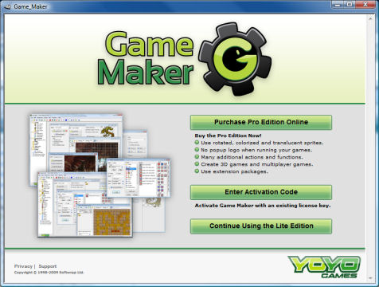

精简版是为了给那些刚刚踏入大坑的开发者准备的。精简版是免费的，但是有一些功能限制，在运行游戏时会显示弹窗，还会定期提醒你升级到专业版。如果你经常使用Game Maker我们强烈建议你将其升级到专业版。
专业版 包含了相当多的功能，并且不显示任何 logo或弹窗。更详细地说，专业版具有以下额外的功能：
升级专业版的成本只有20欧元或25美元。（可能会变动）。只需要掏一次钱，就可以使用整个Game Maker8.x版本，比火麒麟便宜得多。
当你运行的是精简版，每次打开Game Maker都会看见这个：

你可以在这里升级到专业版，这里有许多升级方法
最简单的方式是在线购买升级。在这点Purchase Pro Edition Online . 会弹出一个网页，在那里你可以通过信用卡或通过PayPal付款。整个交易将由我们授权的SoftWrap公司来处理。一旦支付成功，软件会立即升级到专业版，你不需要做任何事。仔细保存（并打印）你的许可证和收款凭证，如果你以后想要重新安装，可能会需要重新认证。（当你正在运行该程序，也可以在帮助菜单中选择在线升级到专业版。）
如果你之前购买过Game Maker （因此，你有一个激活码或先前的购买凭证）点击按钮Enter Activation Code 。你会被带到一个网页，在那里你可以输入你的激活码，或从前的购买凭证。如果你弄丢了，在这里可以找回。在你填入了正确的信息后，Game Maker 将会升级到专业版。请注意，你必须要联网。（当你正在运行该程序，也可以选择在帮助菜单中选择输入激活码升级到专业版。）
如果你觉得凭你你现在的水平还不需要升级到专业版，点击按钮 Continue Using the Lite Edition.